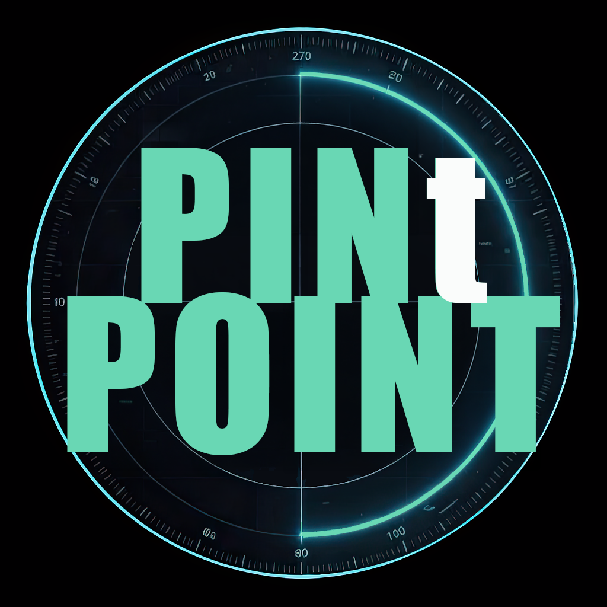
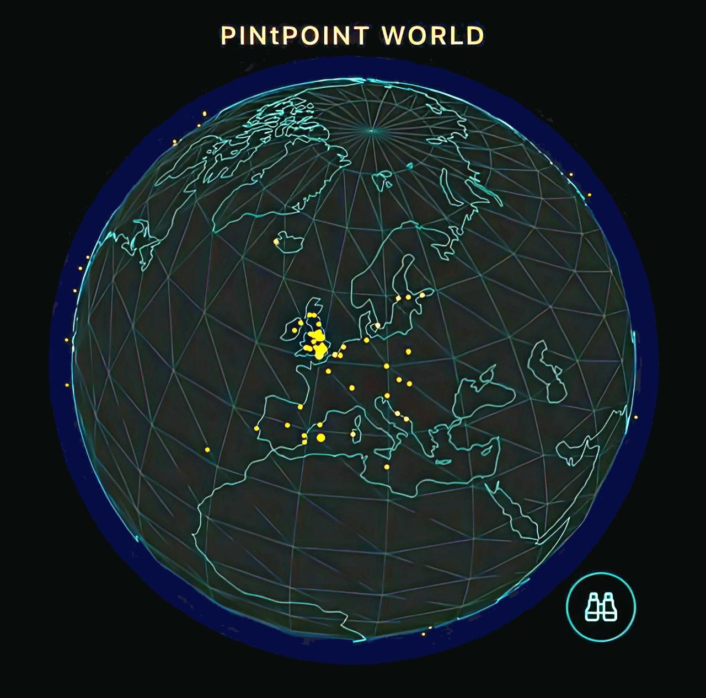

Stop bimbling.
Start drinking smarter.
Find the right pub before the first pint.
7-day free trial · £3.99/year · iOS and Android
In one paragraph
What is PINtPOINT?
PINtPOINT is a beer-first pub discovery app that shows you what is actually on tap before you arrive. A live radar ranks nearby venues by what they are pouring right now, filterable by beer style, so every suggestion is already relevant to the kind of pint you want next. Less bimble, more pint. Currently tracking 1,776+ venues across 46 countries, with 17,611+ beers matched to tap lists.
Most beer apps help you remember what you drank. PINtPOINT helps you decide what to drink next.
What you get.
Live Radar
See nearby venues as blips on a live radar. Tap one and the app flips into a compass that points you straight there.
What's On Tap
Check tap lists before you walk through the door, so you're not gambling your evening on a chalkboard and a warm hope.
Create-a-Crawl
Build a custom pub crawl in seconds. Set the distance, number of stops, and route shape, then share it with your group.
Beer Alerts
Watch specific beers and get alerted when they appear at your saved venues. Perfect for chasing seasonal releases and favourites.
Find Your Kind of Pub
Filter by beer style — West Coast IPA, Bitter, Hazy Pale — so every result is already relevant before you tap. Search by name and the closest match appears first.
Recently spotted.
Live from the radar — beers confirmed on tap in the last 24 hours.
Loading live data…
PINtPOINT World
A global radar for local pints.
We started in the UK, but the app was built for the global craft beer traveller. The live radar spans 49 countries and counting, so you never have to settle for a mediocre drink no matter which continent you're on.

From the blog
Guides, love letters, essays, notes — browse all →
£3.99/year. Less than half a London pint.
Cancel anytime.